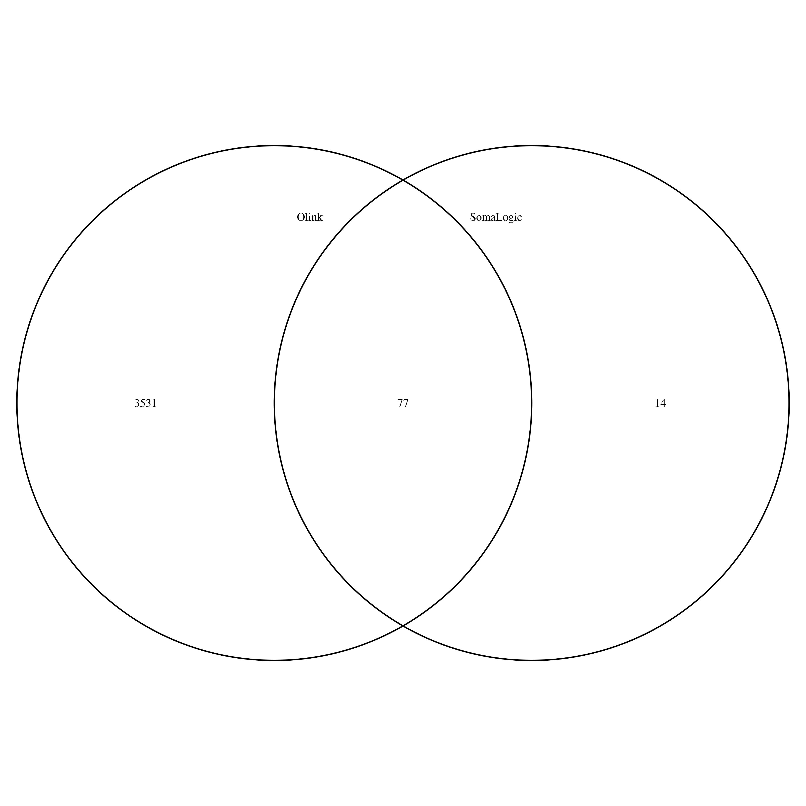

Other notes
UniProt IDs
The list of proteins on inflammation is within one of the Olink panels (as in Olink validation data all panels.xlsx) each containing 92 proteins. Information contained in these panels can be retrieved into R via Olink.R, which also attempts to compromise earlier version and annotations. Nevertheless O43508 is replaced with Q4ACW9 for TWEAK.
BDNF has recently been removed from the assay and replaced with CD8A, https://www.olink.com/bdnf-info/, and there are also changes on TNF and IFN.gamma, https://www.olink.com/inflammation-upgrade/.
A UniProt ID may be associated with multiple chromosomes, e.g., Q6IEY1 with chromosomes 1 and 5. While inf1.csv edits Q4ACW9, inf2.csv is inline with UCSC with respect to P12034 and P30203.
The use of uniprot IDs is noted in two aspects,
-
The protein list in inf1.csv notes both O43508 and Q4ACW9.
-
Q8NF90 and Q8WWJ7 were not listed at the UCSC, their availability on UniProt seem to be for backward compatibility as on query they point to P12034 and P30203 (Q8WWJ7_HUMAN should have been CD6_HUMAN). hgTables.tsv is based on UCSC, checked over UniProt IDs as follows,
grep inf1 doc/olink.prot.list.txt | \
sed 's/inf1_//g;s/___/\t/g' > inf1.list
join -t$'\t' -12 -24 <(sort -k2,2 inf1.list) <(awk '{split($4,f,"-"); $4=f[1]; if(!index($1,"_")) print}' OFS='\t' doc/hgTables.tsv | sort -k4,4) > 12
# 90 lines
wc -l 12
# Q8NF90 (FGF.5), Q8WWJ7 (CD6) are missing
join -v2 -22 12 <(sort -k2,2 inf1.list)
rm 12
Likewise, olink.inf.panel.annot.tsv from olink.annotation.R also has the following two entries
| "target" | "target.short" | "uniprot" | "panel" | "prot.on.multiple.panel" | "panels.with.prot" | "hgnc_symbol" | "chromosome_name" | "start_position" | "end_position" | "olink.id" | "alternate.uniprot" |
|---|---|---|---|---|---|---|---|---|---|---|---|
| "Fibroblast growth factor 5 (FGF-5)" | "FGF-5" | "Q8NF90" | "inf" | FALSE | NA | NA | "4" | 81187753 | 81257834 | "141_FGF-5" | "P12034" |
| "T-cell surface glycoprotein CD6 isoform (CD6)" | "CD6" | "Q8WWJ7" | "inf" | FALSE | NA | NA | "11" | 60739115 | 60787849 | "131_CD6" | "P30203" |
whose hgnc_symbol can be amended as follows
awk '!/BDNF/&&NR>1{if($3=="\"Q8NF90\"") $7="\"FGF5\""; else if($3=="\"Q8WWJ7\"") $7="\"CD6\"";print}' FS='\t' OFS='\t' doc/olink.inf.panel.annot.tsv
The overlap with SomaLogic panel is characterised with Olink.R which also gives a Venn diagram. 
Approximately independent LD blocks:
- Set up 1703 autosomal regions as defined in EURLD.bed.
- Extract variants outside the regions in high LD to 1672 regions by EURLD.sh.
- Overlap regions and GWAS sumstats:
- Tag GWAS sumstats with regions through aild-rma.sb.
- Pair protein-region which contains genomewide significant signals by aild-list.sb.
- Independently, list variants by region in the reference panel by aild-snplist.sb.
- clump via aild-clump.sb.
- cojo via aild-cojo.sb.
- Downstream analyses with PhenoScanner (preferably v2) as in ps.sh and forest plots on TRYGGVE (with study-specific sumstats).
The regions are predefined. As shown in EURLD.tsv by EURLD.R, the LD patterns across the genome are more variable than the norm in a typical genomewide association analysis therefore slide windows such as 250kb (36), 500kb (300), or even 10Mb (1071), seeing that the sentinel variant may not necessarily lie right in the middle of a window. The number of signals in our case were close to GCTA but overestimated (53 by PLINK) as in the following table. For instance, it is often seen from the PLINK --clump-range outputs that sliding windows can give results in two neighbouring LD blocks.
Note that pairing regions of interest would reduce the burden of genomewide analysis, and also that region-specific reference will not affect results from steps 4 and 5 regarding use of variants from GWAS sumstats.
Steps 4 and 5 both use INF1.aild, which contains all the protein-region pairs. The results are classified as in analysis.sh. In particular, for step 5 this is done with aild.sh.
Near-independent signals from cojo and clumping
| Run | Option | cis | trans | total | Comments/location+ |
|---|---|---|---|---|---|
| GCTA | |||||
| 1 | LD blocks | 210 | 147 | 357 | only SNPs, cojo/aild-snp/INF1.jma.*, also doc/INF1.paper.xlsx |
| + indels | LD blocks | 220 | 155 | 375 | SNPs+indels, cojo/aild-indel/INF1.jma.* |
| 2 | default | 234 | 173 | 407 | --cojo-collinear 0.9 --cojo-wind 10000, doc/SCALLOP_INF1-260419.xlsx |
| 3 | small R2 & window | 189 | 186 | 375 | --cojo-collinear 0.1 --cojo-wind 500, doc/SCALLOP_INF1-260419.xlsx |
| PLINK | |||||
| 4 | LD blocks | 594 | 252 | 846 | only SNPs, clumping/aild-snp/INF1.jma.*, also doc/INF1.paper.xlsx |
| + indels | LD blocks | 621 | 258 | 879 | SNPs+indels, clumping/aild-indel/INF1.jma.* |
| 5 | INTERVAL LD panel | 657 | 275 | 932 | --clump-r2 0.1 --clump-kb 500, doc/SCALLOP_INF1-120419.xlsx |
| 6 | 1000G LD panel | 405 | 229 | 634 | --clump-r2 0.1 --clump-kb 500, clumping/INF1.1KG.r2-0.1.clumped.* |
| 7 | INTERVAL data | 424 | 188 | 612 | --clump-r2 0.1 --clump-kb 500, doc/SCALLOP_INF1-120419.xlsx |
| 8 | 1000G LD panel | 402 | 226 | 628 | --clump-r2 0.1 --clump-kb 1000, on tryggve |
+The directories are relative to /scratch/jhz22/INF, i.e., doc/, cojo/ and clumping/, Results in 2 and 3 include regions in high LD excluded in other analyses.
A few observations can be made,
- indels lead to more signals in cojo (1) and clumping (4) analyses.
- default GCTA --cojo-collinear and --cojo-wind parameters did quite well in numbers, esp. taking ~30 away regions in LD (1, 2).
- Although it looks close, GCTA --cojo-collinear 0.1 produces considerably less signals compared to --cojo-collinear 0.9 (3).
- the number of signals increase with the values of GCTA parameters (2, 3), yet moderate changes in LD window have less impact than the reference panel (5, 8).
- PLINK --clump gives more signals than GCTA --cojo (1, 4 and 2, 5).
- Specification of sliding LD windows disregarding AILD patterns in clumping gives 53 additional signals (4, 5).
- Thanks to the larger sample size and perhaps greater variant number, INTERVAL as LD reference leads to more signals than 1000Genomes (5, 6).
- Summary statistics from larger sample size gives more signals (5, 7).
- Unpruned results are likely to give more cis signals but this is subject to scrutiny perhaps on individual cases.
It can be concluded that it is desirable to employ approximately independent LD blocks for both GCTA (1) and PLINK (4), and also that reference such as UK10K+1KG would be desirable with respect to both sample size and variant number.